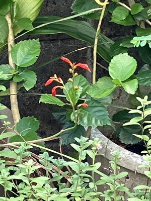
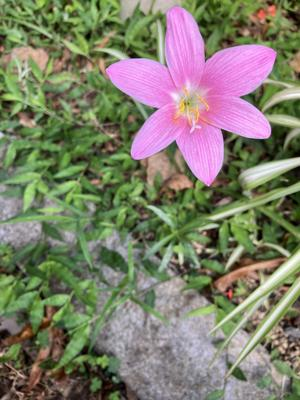

うるがいの話 ある日
最新: ７月の花【うるがいの話 ある日】とは 一日だけのプログです
『うるがいの話』の最新一日だけのプログで、通信料が少なく経済的だ。カニの画像をクリックすると全ての日付が載る『うるがいの話』サイトを表示します
|
|
【うるがいの話】 うるがい(ｳﾙｶﾞｲ urugai)とは、『もずくがに』の名前でとても大きくなります。 |
|---|---|
|
|
【カミマヤーの話】 猫のことを方言でマヤーといいます。カミマヤー（kamimayaa）とは、神の猫のことです。 |
|
【たながぁの音楽】 たながぁ（ﾀﾅｶﾞｰ tanagaa）とは手長えびのことで、何種類かあり大きいのは車 エビぐらいになります。 |

|
【ぶながぁの話】 ぶながぁ(ﾌﾞﾅｶﾞｰ bunagaa)とは、赤い髪の毛、赤い身体、そして身長は１ｍ２０ｃｍ ぐらい、川の蟹を食べているの目撃された。場所は沖縄県国頭郡大宜味村のと ある村僕の隣近所に住んでいる爺さんから、聞いた話です。 |
|
|
【ギーマの話】 ギーマ(giima)とは、山原の里山に咲くスズランに似た、 花を付けます。実は食べられます、 気が付くと口の周りが紫になっています。 |
2024年08月04日 (日）７月の花
16:06

県立病院で、お義母さんにスマホで撮った花を見せているとき、『この花の
名前は？』と聞かれたが答えることが出来なかった。下上の写真は７月２９日
の花がしぼんでしまった『ヒメヒオウギズイセン』である。
そして、次は７月２９日に花を開いたサフランモドキ（タマスダレ属の植物
）で既に枯れてしまっている。毎年、みているものの時期をはっきりと認識
していなかった。

５月２２日から、楽譜が載っている本を参考に楽譜データを作成し始めたと
ある曲、演奏させたらおかしい？のである。耳慣れた曲になっていない。悶
々とする、そして本が間違っているかもとわざわざジュンク堂書店で楽譜を
確認、別の本を購入した。ところどころ微妙に違うのだ、早速訂正する。と
ころがでる、やはりおかしい？。悩み悩んだところ楽譜が『ハネたリズム』
（トウシンドーイやヒヤミカチ節（早引き）』の３連符のリズムなのである
『ハネたリズム』をやめたら、スッキリした。そしてユーチューブ動画へア
ップする。本がおかしい？、私の音感が誤っているのか。
１５時５８分 ビットコインの総資産 ￥２５、８７８（↓３７５）